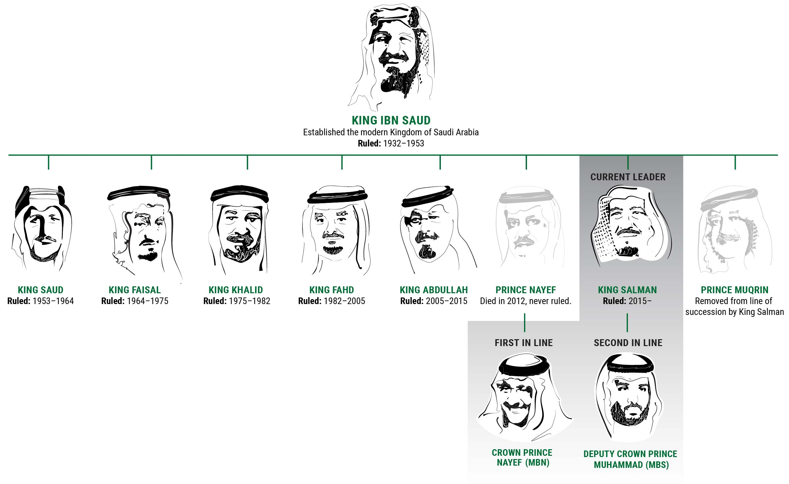

Line of Succession

Only rulers and certain would-be rulers are shown
Only recent rulers and certain would-be rulers are shown
The kingdom of Saudi Arabia, America’s oldest ally in the Middle East, is on the verge of a historic generational change in leadership. King Salman bin Abdul-Aziz Al Saud, 79, who ascended to the throne in January, following the death of King Abdullah, will be the last of the generation of leaders who built the modern kingdom, transforming it from a poor desert backwater into a prosperous, ultra-conservative regional power with enormous oil wealth.
What the future has in store for the kingdom is of great concern to Washington. Within months of becoming king, Salman plunged into what appears to be a quagmire war in Yemen, snubbed President Obama, and endorsed hardline clerics who are opposed to reforms that Obama argues are necessary if Saudi Arabia is to remain a stable partner for the United States. Not a promising start from the American point of view. However, one of the king’s first moves was greeted very enthusiastically: he changed the order of succession, pushing aside his half-brother Muqrin bin Abdul-Aziz as next in line to the throne and making one of his nephews, Muhammad bin Nayef, 56, the new crown prince and heir.
MBN, as he is known, will be the first of his generation to rule the kingdom—unless, of course, the king reshuffles the deck again. U.S. officials are keeping their fingers crossed, since MBN is the darling of America’s counterterrorism and intelligence services, having performed several critical services for the U.S. in his capacity as deputy minister of the interior and then minister of the interior—the office that oversees all domestic security matters. Unlike his father, who preceded him in those positions, he is pro-American, almost certainly more so than any other member of the Saudi leadership.
In the Saudi monarchy bloodlines are all-important. Who your father is in the royal pecking order is the major factor in determining your fate. If your father is a direct descendant of the king, you may become king. Since Saudis have many wives and concubines, the mother’s bloodline is less important but not irrelevant.
The founding patriarch of modern day Saudi Arabia, and father of all the kings who have followed him, was King Abdul-Aziz bin Saud, known in the West as Ibn Saud. He led his tribal army into power in Riyadh early in the 20th century, and by the 1930s he was the undisputed master of the Arabian Peninsula from the Red Sea to the Persian Gulf, including the two holy cities of Mecca and Medina.
Ibn Saud had at least 22 wives and 44 acknowledged sons. Since his death in 1953, six of those sons have ruled the kingdom in succession. His 23rd son, Nayef bin Abdul-Aziz (Nayef)—MBN’s father—was second in line to the throne, but died in 2012, just a few years before he would have succeeded King Abdullah.
Born in 1934 near Taif, Nayef was educated in Riyadh at what was called “the princes’ school,” where his teachers were clerics of the Wahhabi faith, the brand of Sunni Islam that runs the kingdom. The alliance between the House of Saud and the Wahhabis dates back nearly three centuries, to the very beginning of the rule of the Saudis. In 1744 an itinerant preacher and cleric named Muhammad Ibn Abd al-Wahhab joined forces with the then head of the Saudi family, Muhammad al-Saud, to create the first Saudi kingdom. While the Saudis provided political and military leadership, Wahhab and his descendants provided religious leadership and legitimacy. Wahhab and his disciples preached a puritanical and sectarian version of Islam that called for a return to literal fundamentalism and an intolerance of any deviation from their hard line views on what constituted the original faith of the Prophet Muhammad.
Early in the 19th century, at a time when the Ottoman Empire was preoccupied with fighting off Napoleon’s invasion of Egypt and Palestine, the Saudis mounted a land grab against the empire. Their tribal armies conducted raids into today’s Iraq and pillaged the Shiite holy city of Karbala, then turned west and conquered the holy cities of Mecca and Medina, purging them of any symbols of Ottoman rule and anything that struck the Wahhabi faithful as deviationist. Most of the Islamic world at the time viewed the Saudis and their clerical allies as fanatics and usurpers, similar in some ways to how the Islamic State is regarded by mainstream Muslims today. This first Saudi state was larger in territory at its peak than today’s but their reign was brief. Once the French were defeated, the Ottomans sent armies into Arabia to recover the holy cities and then destroy the Saudi capital at Diriyah, just outside of today’s Riyadh. Later the Saudis were exiled to Kuwait, not to resume power over the Arabian Peninsula until Ibn Saud led his tribal army out of exile, re-captured Riyadh, and established the third Saudi kingdom, which has lasted until the present day—as has the power of the Wahhabis.
In the 19th century, most of the Islamic world considered the Saudis fanatics and usurpers—much like mainstream Muslims today regard the Islamic State.
The Wahhabis’ alliance with the royal family allows them to oversee Saudi society and enforce Islamic law and customs, which they do in part by working closely with the Ministry of the Interior, their most important ally in the government. In 1970, when Nayef’s full brother Fahd was the minister, he made Nayef his deputy minister. In 1975 when Fahd became crown prince, after their older brother King Faisal was assassinated by a disgruntled prince angry at the introduction of television in the kingdom, Nayef succeeded Fahd as the minister.
As interior minister, Nayef had a reputation as an arch-reactionary. He aligned himself very closely with the most puritanical elements of the clergy, opposed reform and change, rejected demands for more freedom of expression, continued the treatment of the kingdom’s Shiite minority—around 10 percent of the population, located mostly in the oil rich Eastern Province—as second-class citizens, and only reluctantly tolerated any kind of development. When asked why he opposed reforms that would start the kingdom on the path to becoming a constitutional monarchy, Nayef, who clearly had his eye on the throne, replied, “I don’t want to be Queen Elizabeth.” His policies were so extreme that Nayef was known as the Black Prince among the large expatriate Western worker population in the kingdom.
In November 1979, the kingdom experienced a major challenge to the Saudi royal family’s legitimacy and governance. A band of Islamic extremists who believed the apocalyptic End Times had arrived took control of the Great Mosque in Mecca. The largest in the world, it houses the Kaaba, the holiest site in Islam, which is believed to be the first house of worship.
Only after weeks of hard fighting by troops from the Interior Ministry and the Saudi National Guard, aided by French commandos whom the royal family secretly recruited, and by lethal chemicals that the family persuaded the Wahhabi clergy to allow them to use in the Grand Mosque, was the government able to rout the extremists. Much to the embarrassment of the government, however, when the culprits were interrogated it became clear that many of them had been known to the Interior Ministry. Some had even been detained prior to the attack on the mosque, but had been let go at the recommendation of senior clerics close to Nayef.
Saudi royalty was friendly with Osama bin Laden during the Russian-Afghan war and slow to realize that al-Qaida posed a threat to the kingdom.
However, the Black Prince escaped blame for the attack. Instead, the governor of Mecca, one of the most liberal Saudi princes, was made the scapegoat in yet another instance of the familiar royal pattern of appeasing the clerics and their close allies at the expense of reformers.
The episode frightened the royal family into moving even closer to the Wahhabi establishment, slowing reform, and stepping up support for militant Islamic causes in other countries. In particular, the Saudis—with much help from the United States—armed and otherwise supported the Afghan mujahedeen fighting the Soviet invasion of their homeland during the years 1979-89.
The current King Salman, who was then governor of Riyadh, was put in charge of raising private funds for the mujahedeen from the royal family and other wealthy Saudis. He funneled tens of millions of dollars to the mujahedeen, and later did the same for Muslim causes in Bosnia and Palestine. Later, when Osama bin Laden founded al-Qaida, Nayef was conspicuously slow to recognize that al-Qaida posed a threat to the kingdom. He had become friendly with bin Laden during the Russian-Afghan war when bin Laden was allied with the mujahedeen, and viewed him as being exclusively focused on defeating the Soviets. Nayef believed al-Qaida’s reputation as a terrorist organization was a product of American propaganda and was sure that al-Qaida posed no real threat to the kingdom—a delusion he had in common with much of the royal family.
When George Tenet, director of the Central Intelligence Agency, and other senior American intelligence officials warned Nayef that al-Qaida had created an extensive underground infrastructure inside the kingdom, he was skeptical, largely because he had long been suspicious of the United States’ motives in the region. As President Clinton’s Middle East advisor I dealt extensively with Nayef during this period. He was cordial but often uncooperative. When Shiite terrorists bombed the U.S. Air Force base at the Khobar Towers in Dhahran in 1996, killing 19 airmen, Nayef was reluctant to share with the Americans information on the perpetrators and their links to Iran. He claimed to fear that Washington would use the information to justify military action against Iran, which would drag the kingdom into a war. But I felt the deeper reason was that he was, essentially, anti-American.
Nayef continued to ignore warnings about al-Qaida for years. But the threat would eventually become impossible to ignore, and it would be none other than Nayef’s own son, MBN, who would lead the battle against it.
Like many of his generation of Saudi royals, MBN went to school in the United States, attending classes at Lewis & Clark College in Portland, Oregon, though he did not get a degree. To prepare him to succeed his father at the Ministry of the Interior he studied at the FBI in the late 1980s, and at Scotland Yard’s antiterrorism institute between 1992 and 1994. It was around that time, in my capacity as a senior CIA officer dealing with the Middle East, that MBN began to register on my horizon as an up and comer.
Later, as special assistant to President Clinton for Near East and South Asia affairs in the National Security Council, I accompanied Vice President Al Gore to the kingdom during a tour we took through the Middle East in May 1998. We met with both father Nayef and son MBN during our calls in Riyadh. Only afterward did we learn that the Interior Ministry had disrupted a plot by al-Qaida to attack the United States Consulate in Jiddah while the vice president was there to meet with then-Crown Prince Abdullah.
The plot against Gore was the exception to what had been bin Laden’s general rule of avoiding violent operations inside the kingdom. Since al-Qaida’s infrastructure inside Saudi Arabia provided him a large number of recruits and much financial support, he preferred to keep it off the Interior Ministry’s radar, and thanks in part to Nayef’s blindness was largely successful at doing so.
Then came 9/11, and the news that 15 of the hijackers aboard the planes that were downed in the U.S. were Saudis. But minds were slow to change even then. As late as December 2002 Nayef, like many in the royal family, was still not convinced that al-Qaida had a base within the kingdom’s borders, insisting that the Saudi hijackers were “dupes in a Zionist plot”—despite the fact that, according to Saudi sources, two of them had earlier been involved in the plot to attack Gore.
Nayef’s son was a different matter. By 2001, MBN was already a major—and respected—figure in the war on terrorism. He had become assistant minister of the interior two years earlier. In that capacity, much to the relief of U.S. officials, he had taken over most of the day-to-day management from his father. This would prove fortunate for the Saudis, because bin Laden was about to turn his attention to his native land. After 9/11 and the subsequent American overthrow of the Taliban, al-Qaida’s hosts in Afghanistan, he ordered al-Qaida’s underground cells inside Saudi Arabia to begin operations against the monarchy and its American ally.
On February 14, 2003—the Muslim holy day of Eid al-Adha—bin Laden’s intentions in Saudi Arabia became unmistakably clear. He issued an audio message titled “Among a Band of Knights,” accusing the House of Saud of betraying the Ottoman Empire in the First World War to the British and Zionists. And now the royal family, he said, was turning over the mosques and other holy places to the American Crusaders and secretly colluding in a plot with “Jews and Americans” to betray Palestine and create a “Greater Israel” in the region. Predicting that American air bases in the kingdom would be used to launch part of the invasion of Iraq that he said was imminent, he called the Saudi royals and their allies in Kuwait, Bahrain, and Qatar “quislings.”
The first major attack in the kingdom came on May 12, 2003, at a compound in Riyadh that housed foreign military experts working for the Saudi armed forces. Over a dozen al-Qaida terrorists attacked the compound with car bombs and small arms. At least eight Americans, two Australians, and several other westerners were killed along with Saudi security guards. It was the first volley in what became a campaign of terror against foreign workers in the kingdom and their Saudi hosts. Robert Jordan, then the U.S. ambassador in Riyadh, had been pressing the Saudis to take al-Qaida more seriously for months; now he called the May attacks Saudi Arabia’s Pearl Harbor.
Immediately after the May attack, George Tenet, the director of the CIA at the end of President Clinton’s administration and in the first years of President George W. Bush’s, flew to the kingdom to see Crown Prince Abdullah, who had been serving as de facto regent for almost eight years, after King Fahd suffered a stroke. According to Tenet’s memoir, At the Center of the Storm, he told the Crown Prince, “Your Royal Highness, your family and the end of its rule is al-Qaida’s objective now. Al-Qaida operatives are prepared to assassinate members of the royal family and attack key economic targets.” Tenet warned the Saudis that, “we have great specificity with regard to the planning. It is directed against your family.” Tenet convinced Abdullah and MBN that the danger was acute.
Tenet regarded MBN as the CIA’s closest partner in fighting al-Qaida and the key to the defeat of the al-Qaida threat to the House of Saud between 2003 and 2006. “My most important interlocutor,” he wrote. “A relatively young man, he is someone in whom we developed a great deal of trust and respect.” It was during that period that MBN came into his own.
For the next three years the kingdom was a battlefield as al-Qaida attacked targets that included even the Interior Ministry’s own headquarters in Riyadh. Other compounds for foreign nationals were attacked and an American was kidnapped and then beheaded. Shootouts between al-Qaida terrorists and the police took place in virtually every major Saudi city and many towns. More attacks followed on foreign targets, including a major assault on the United States consulate in Jiddah on December 6, 2004, in which a young female American diplomat was almost captured by the terrorists. Hundreds died and many more were wounded during these battles. It was the longest sustained campaign of violent unrest Saudi Arabia had endured in 50 years, and the most serious internal challenge to the House of Saud since the establishment of the modern state in 1902. Before it was over, the war would cost the government well over $30 billion.
MBN led the counteroffensive. The Interior Ministry issued lists of the most wanted al-Qaida terrorists and then proceeded to hunt them down ruthlessly. Whenever any of the men on a list were eliminated in firefights or ambushes, the ministry would update the list with the names of the next most wanted al-Qaida fighters. It was a tough and dangerous time—most foreigners who could leave the kingdom did so, or at least sent their families away. MBN was the face of the Saudi war on al-Qaida, appearing on television and in the newspapers to explain the threat the kingdom was facing.
The CIA viewed MBN as its closest partner in fighting al-Qaida and the key to defeating the threat to the House of Saud.
Efficient and deadly as MBN’s strategy was, he was careful not to engage in the kind of massive and disruptive search-and-destroy operations that would have entailed collateral damage, and created an impression that the kingdom was in flames. His manhunts were targeted and selective, avoiding civilian casualties and the violence that characterized counterterrorism operations in Algeria in the 1990s and in Iraq today. Thus his Interior Ministry commandos were able to hunt terrorists without causing blowback among the population. The prince understood the need for proportionality and discretion in fighting a terror underground.
By 2007 it was apparent that MBN and the Interior Ministry had gained the upper hand on al-Qaida and the threat was dissipating. The jihadists lost the battle for hearts and minds in the country. While many Saudis sympathized with bin Laden’s battle against America, they were disillusioned when innocent Saudis died in al-Qaida attacks and the war was brought to their own homes. The terrorists failed to gain popular support for their cause, which doomed them to defeat.
It took three years to beat back al-Qaida inside Saudi Arabia, but it has not gone away. Instead, the organization has metastasized throughout much of the Middle East and into Africa. In 2009 al-Qaida in the Arabian Peninsula, the successor to the group MBN defeated at home, surfaced in Yemen. In December 2009 it sent Umar Farouk Abdulmutallab, a Nigerian, to blow up Northwest Airlines Flight 253 on Christmas Day as it was descending over southern Ontario to Detroit. But the explosives Abdulmutallab had hidden in his underwear failed to detonate properly and he was subdued by a fellow passenger and members of the airplane crew.
Ever vigilant against the danger al-Qaida continues to pose to the kingdom, MBN has cultivated a network of informants, and has foiled more than one plot against the U.S. When al-Qaida planted bombs on UPS and FedEx planes headed from Yemen to Chicago on the eve of the 2010 U.S. congressional elections, MBN called the White House and gave President Obama’s terrorism advisor, John Brennan, the tracking numbers for the deadly containers. The planes were then detained at stopovers in Dubai and East Midland in the United Kingdom and the bombs were removed.
In addition to his international reputation as a resourceful spymaster, MBN is a hero in his own country as the result of an incident in which he nearly lost his life six years ago. He agreed to meet Abdallah Asiri, an al-Qaida terrorist, who said he would turn himself in if he could surrender directly to the Saudi deputy minister of the interior. Asiri promised that if he could meet the minister face-to-face, he would then be able to convince his comrades—including his own brother, Ibrahim Asiri, al-Qaida’s premier bomb maker, the very man who would later build the bombs that were on the planes to Detroit and Chicago—to surrender as well. When the meeting took place on August 27, 2009, Asiri triggered a bomb, blowing himself up but only lightly wounding the prince. Hours later MBN appeared on Saudi television to tell the story to the kingdom, without getting into the details.
A few days later, Leon Panetta, then the director of central intelligence, who was visiting Riyadh, got a fuller account. After Abdallah Asiri entered his office, MBN said, the two men sat on the floor on a set of pillows. Suddenly Asiri began to shake and cry. He produced a cell phone from his robes, saying he wanted to call his family. After talking intensely on the phone with his brother, Ibrahim, he passed the phone to MBN, who opened the conversation with the traditional Arab greeting, salaam alaykum (God’s peace be with you). At that moment, Asiri blew himself into a thousand pieces. The explosives, hidden in Asiri’s rectum, blasted downward and left a crater where he had been sitting, but spared MBN.
This was at least the third major attempt on the prince’s life. But these near misses only reinforced MBN’s determination to lead Saudi Arabia’s counteroffensive against al-Qaida. He has always been characterized by an intense sense of duty, something he inherited from his father, who was minister of the interior for 37 years.
In 2011, MBN’s father, Nayef, moved up to become crown prince, much to the worry of American officials, who did not want him on the throne. That same year saw the blossoming of the Arab Spring. Many in the West welcomed what seemed to be the peaceful overthrow of authoritarian regimes in Tunisia and Egypt, accompanied by protests elsewhere in the region, including in Saudi Arabia’s neighbor, the island emirate of Bahrain. Nayef, however, like many people in power in the area, was horrified by what was happening—and irate when President Obama pressed Hosni Mubarak to quit the presidency of Egypt. Nayef pushed for Saudi intervention in Bahrain to shore up its Sunni royal family, which was facing unrest among its Shiite majority. A brutal crackdown ensued, crushing the reform movement there. Despite muted American protests Saudi troops remain on the island today.
MBN is the public face of repression in the kingdom. Dissidents across the Gulf States accuse him of promoting a “Pax Saudiana” and treating all dissent in the kingdom as terrorism.
At home Nayef urged his half-brother King Abdullah to respond to demands for change without compromising. But Abdullah took a more flexible line. For years he had been cautiously, incrementally, introducing limited reforms. Under his rule many more Saudi women had access to higher education and to at least a few mid-level government jobs. There were even hints from his court that someday Saudi women might be allowed to drive cars. He also appointed representative councils that had a voice in municipal affairs. And he appropriated over a hundred billion dollars in new spending to improve the conditions of the Saudi lower and middle classes.
But Abdullah’s reforms never challenged the fundamentals of the Saudi system. The Interior Ministry, now being run by MBN, cracked down mercilessly on dissenters, imprisoning anyone who advocated reform. MBN was savvy about terrorist threats to the kingdom, but less so about the dangers of refusing to allow its citizens to express themselves freely. Abdullah’s reforms gradually got reversed or stalemated. The reactionaries had again thwarted the reformer.
Nayef’s health failed him in 2012. When he died at 78 in June of that year in Geneva, there were quiet sighs of relief down the official corridors of Washington—and a spirit of optimism about working with his son MBN, who by then had already taken on the mantle of the Prince of Counterterrorism.
MBN has been at the forefront of innovative new tactics in fighting terrorism, especially in the effort to rehabilitate terrorists who were either captured by the police or defected from the terror apparatus because of disillusionment with the jihadist cause. The Ministry of the Interior today runs five special high security prisons with some 3,500 prisoners, almost all former al-Qaida operatives, where the goal is not incarceration but rehabilitation. The prisoners are showered with perks, can receive visits from their relatives and are even allowed to go to weddings and funerals with supervision; their families get special allowances from the government for better housing, medical care, and education. The objective is to make the former terrorists’ families take responsibility for their sons’ future. The theory is that if the family feels it has a stake in the rehabilitation of their wayward children, it will take on the job of convincing them of the error of their ways.
The Interior Ministry acknowledges that 20 percent of the “graduates” of its rehabilitation prisons return to terrorism, but that’s a rate of recidivism considerably below that of prisons in the U.S. and Europe.
Still, the system MBN, now crown prince, has put in place has significant drawbacks. As the head of the feared Interior Ministry—he was made minister in 2012—MBN, like his father before him, is the public face of repression in the kingdom. Dissidents across the Gulf States accuse him of promoting a “Pax Saudiana” of repression, for the monarchy continues to treat all dissent in the kingdom as terrorism.
The extent of government repression of all forms of dissent has rightly raised new questions about the wisdom of close relations between the House of Saud and the U.S. and other Western democracies. The Economist has called for an end to business as usual with the kingdom and a more robust approach to encouraging transparency and accountability in Saudi politics. In an editorial just after Salman became King entitled “An Unholy Pact,” The Economist wrote that “the Wahhabism they [the Saudis] nurture endangers not just the outside world, but the dynasty itself” by encouraging extremism.
President Obama has been a strong supporter of the kingdom; it was the first place in the Middle East he visited as president. But he has said that while the Saudis face real external threats, including from Iran, it is the internal threat that is most serious. The kingdom’s population is “in some cases alienated, youth are underemployed, (with) an ideology that is destructive and nihilistic, and a belief that there are no legitimate political outlets for grievances.” The president has promised “tough conversations” with the leadership about liberalizing some of its policies.
King Salman has instead moved the kingdom even closer to the Wahhabi establishment. He fired the only female cabinet level minister shortly after coming to the throne; she had been an advocate of physical education for girls and a target for hardliners. Salman has met often with notoriously reactionary members of the clerical elite. He built close ties to them during the 50 years he was governor of Riyadh, a period when the city went from a population of about 200,000 to over 7 million, but retained its status as the most conservative city in Islam.
The kingdom’s Wahhabi Islam is the most fundamentalist Sunni branch of the religion. But it has now been outflanked by religious radicals who are even more intolerant, xenophobic, and far more violent. The blood-curdling appearance of the Islamic State in Iraq and Syria in 2014 represents a new challenge to the world and, in particular, to MBN and his counterterrorism program. Heir to al-Qaida in Mesopotamia, which went deep underground during the American surge in Iraq in 2007 only to resurface after the withdrawal of foreign forces, the Islamic State has staged a multipronged comeback campaign. In 2012-13, it began targeting Iraqi prisons where al-Qaida terrorists were incarcerated and creating an infrastructure in neighboring Syria to assist in its revival. In the summer of 2014 it waged a blitzkrieg-like offensive across Sunni populated Iraq, took command of the country’s second city, Mosul, and declared the creation of a caliphate to rule all of Islam.
In November 2014 the Islamic State announced that its goal is to take control of the mosques in Mecca and Medina and oust the “serpent’s head”—the Saudi royal family. Its English language magazine published a cover story with a photo of the Kaaba with the Islamic State’s black flag flying over it. Islamic State militants have attacked Saudi security posts along the Iraqi border and sent suicide bombers to attack Shiite mosques inside the kingdom in order to fuel sectarian enmity. In response to the threat the Interior Ministry has arrested hundreds of Islamic State operatives and is constructing a 600 mile long security fence or wall along the Saudi-Iraqi border, similar to a 1,000 mile long wall it built along the Saudi-Yemeni border to defeat al-Qaida in the Arabian Peninsula.
The Islamic State announced that its goal is to take control of the mosques in Mecca and Medina and oust the Saudi royal family.
Abdullah died in January this year after almost 20 years of ruling the kingdom, first as crown prince filling in for an incapacitated King Fahd, then as king in his own right. Having outlived two crown princes, Sultan and Nayef, Abdullah had tried to prepare for an orderly succession. In July 2012 he made his half-brother Prince Muqrin the deputy prime minister, second in line to the throne after Crown Prince Salman, now king, also a half-brother. Muqrin was very close to Abdullah and his reforms.
Abdullah’s passing marks a major milestone in the kingdom’s history. A reformer by Saudi standards, he ruled longer than any of his brothers and through perilous times. His designated successor was Salman, 13 years younger. Once Salman ascended the throne, he made Muqrin crown prince, as was expected, and moved MBN up to second in line as deputy prime minister. It was assumed that Muqrin, who was born in 1945, the 35th son of Ibn Saud, would become king some day, and that MBN would then have some years to prepare for his own ascension, and to get the country ready for the generational transition from the sons of Ibn Saud to his grandsons.
Then came a stunning and unprecedented family reshuffle. At four o’clock in the morning on April 29, Salman sacked Muqrin and made MBN crown prince in his stead. Salman’s son Muhammad bin Salman (MBS) became the new number two. No explanation for the unprecedented ouster of a crown prince was given then or since. There is intense speculation that Salman made this change because MBN has no sons of his own (only two daughters), which means that MBS—who some sources say is not yet 30—will have a better chance of one day succeeding to the throne. Some speculate that MBN will sooner or later get the boot himself to ensure MBS makes it to the top.
MBS’s unbridled ambition has alienated many of his fellow princes. He has a reputation for arrogance and ruthlessness. He controls oil policy, but his complete lack of experience in the energy industry is all too evident. However, his principal vulnerability is his prominence, in his role as minister of defense, as the driving force and public advocate of Saudi policy toward its desperately poor, politically unstable neighbor on the peninsula: Yemen.
Yemen has always been a thorn in Saudi Arabia’s side. Ibn Saud went to war with Yemen in 1934. His armies captured much of the low-lying coastal plain along the Red Sea but could not conquer the mountainous interior of the country. A peace treaty ceded several border provinces to the kingdom, thus ensuring a long-standing irredentist movement in Yemen. In the 1960s the Saudis backed the Zaydi Shiite monarchs who traditionally ruled Yemen against an Egyptian backed republican movement that threatened to topple all the monarchies in the peninsula.
But in March of this year the Saudis launched air strikes against the Houthis, the Zaydi Shiite rebels who had deposed the pro-Saudi government in Sanaa last fall and taken control of much of the country. The Saudis were particularly alarmed by the Zaydi decision to open direct air flights to Tehran (a first), offer Iran use of Hudaydah port, and negotiate a cheap oil deal with Iran. Riyadh got support for its air war from all the other Arab states of the Gulf region except Oman. Jordan, Morocco, and Egypt have also joined Saudi Arabia in the war effort but Pakistan, a longtime Saudi ally, refused.
The United States is providing intelligence and logistical help, despite getting only a few hours’ notice from Riyadh about the first strikes. The Saudis initially called the campaign Operation Decisive Storm, a deliberate echo of the United States’ pummeling of Saddam Hussein’s regime and the eviction of his forces from Kuwait in 1991. It is by far the most assertive foreign policy move in the kingdom’s recent history. Previous Saudi interventions in Yemen were clandestine, covert affairs. King Salman is projecting Saudi military might in an aggressive manner unprecedented since the days of his father Ibn Saud in the 1930s. The stakes are high.
So far the Yemeni adventure has not gone well, however. The war seems to be bogged down in a stalemate. Saudi Arabia and its allies control Yemen’s airspace and coastal waters and the southern port of Aden, but the Zaydi Houthis and their allies control most of northern Yemen.
Meanwhile, the Saudi blockade is creating a humanitarian catastrophe for the 25 million Yemenis, and the war has been a net gain for al-Qaida in the Arabian Peninsula. With the Saudis fighting the Houthis, much of eastern Yemen has become even more lawless than usual, allowing al-Qaida to take control of large parts of the Hadramawt province in the southeast, where bin Laden’s father and family had lived before emigrating to the kingdom in the 1930s.
The Yemen war, which is King Salman’s first major foreign test, has profound implications for the stability of Saudi Arabia, the Arabian Peninsula, and the region as a whole. The war has a Sunni-Shia sectarian dimension, and it’s also an arena of the broader Saudi-Iranian struggle for regional hegemony. Moreover, because the war is partly about Yemeni aspirations for a more inclusive government, it represents, in effect, the unfinished business of the Arab Spring, which the Saudis have resisted so vigorously.
The conflict is likely to draw in more players as it goes on and to spill out of Yemen to other countries. Already it has sparked violent clashes between MBN’s Interior Ministry forces and Shiite militants in the Saudis’ Eastern Province.
In short, Yemen could end up being a black mark on King Salman’s reign, and fatal to the ambitions of both MBN and MBS. Given how much he has identified himself with the war effort as minister of defense, MBS has the most to lose. So far he still has his father’s ear, and has represented him in visits to Russia and France. When King Salman abruptly canceled plans to meet President Obama at Camp David to show his pique at the president’s plan to secure a nuclear deal with Iran, he sent the two princes, MBN and MBS, in his stead. Obama pressed them on reform but backed their war. When King Salman finally did travel to Washington the talks were brief and the focus for the Saudi audience was more on MBS than his father.
MBN may be the most pro-American prince ever to be in line to the throne. He is probably the most successful intelligence officer in the Arab world of today. Panetta, like Tenet, praises him, calling MBN the “smartest and most accomplished of his generation.” Only King Fahd, another former minister of the interior, may have been so instinctively inclined to support American interests. Unlike his father, MBN seems altogether comfortable working closely with Americans. He seemed to get on fine with President Obama at Camp David. His agents just captured the mastermind of the 1996 Saudi Hezbollah attack on U.S. military barracks in Khobar, Saudi Arabia, that killed 19 American service members. MBN has already had more responsibility than any Saudi of his generation, and his burden is likely to become all the heavier given the chaos in the post-Arab Spring Middle East. He knows he needs allies.
But Washington should have no illusions that MBN will take Western advice to reform the kingdom. Saudi Arabia makes no bones about being the leading opponent of everything the Arab Spring stood for when it began in 2011 and everything that so many in the West were cheering for. The Saudis helped engineer the 2013 coup in Egypt that restored military rule to the largest Arab country and dealt the Arab Spring a fatal blow. They are skilled counterterrorists, but they are also accomplished and unabashed counterrevolutionaries.
Saudi Arabia is the world’s last significant absolute monarchy. It will not have a Gorbachev moment, because the royal family will not give up their control of the nation, nor will they loosen their ties with the Wahhabis and their faith. King Salman, Crown Prince Muhammad bin Nayef, Deputy Crown Prince Muhammad bin Salman, and virtually all of the rest of the Saudi establishment believe they have survived more than two and a half centuries in the rough politics of the Middle East not just because of their ruthless determination to stay absolute monarchs, but because of their alliance with the Wahhabi clerics.
The House of Saud has outlasted the Ottomans, Nasserism, Communism, Baathism, and most other royal families. In 1979 many thought they would go the way of the Shah of Iran. As a young analyst at the CIA charged with the Saudi portfolio I predicted then that they would survive for many decades to come. It is too soon to write their epitaph, but I suspect it is too late to expect them to change.
Bruce Riedel is a senior fellow and director of the Brookings Intelligence Project, part of the Brookings Center for 21st Century Security and Intelligence. In addition, Riedel serves as a senior fellow in the Center for Middle East Policy. He retired in 2006 after 30 years of service at the Central Intelligence Agency, including postings overseas. He was a senior advisor on South Asia and the Middle East to the last four presidents of the United States in the staff of the National Security Council at the White House. He was also deputy assistant secretary of defense for the Near East and South Asia at the Pentagon and a senior advisor at the North Atlantic Treaty Organization in Brussels.
Join the conversation on Twitter using #BrookingsEssay.
Sign up for email and be and the first to hear about new Brookings Essays and other related research from Brookings.
Like other products of the Institution, The Brookings Essay is intended to contribute to discussion and stimulate debate on important issues. The views are solely those of the author.
GRAPHICS AND DESIGN BY JESSICA K PAVONE AND CAMERON ZOTTER. WEB DEVELOPMENT BY FRIENDLY DESIGN CO. ILLUSTRATIONS BY SAREEN HAIRABEDIAN AND MECCA LEWIS. RESEARCH BY FRED DEWS, THOMAS YOUNG, AND JESSICA K PAVONE. EDITORIAL BY BETH RASHBAUM AND FRED DEWS.